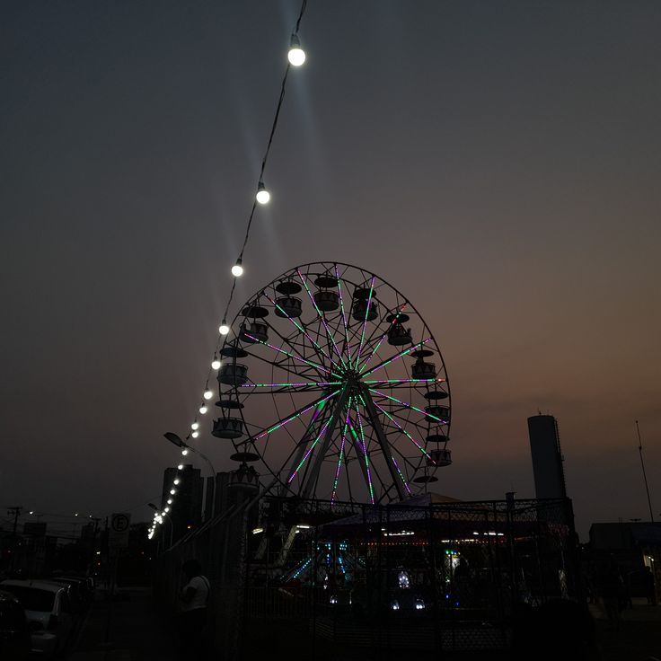

Estou escrevendo isso enquanto dou voltas suaves no topo de uma roda-gigante.
Resolvi vir a um parque de diversões hoje, meio que por impulso, pra ver se conseguia aliviar a cabeça, espairecer um pouco depois do turbilhão que foi o dia. E não, antes que você pense besteira, não teve assassinato nenhum, Miska. Eu não tô sempre do seu lado, o tempo todo. Embora... eu quisesse estar.
Mas às vezes, filha, eu preciso parar e lembrar que eu também existo. Que antes de qualquer missão, de qualquer fuga, de qualquer decisão absurda ou necessária... existe uma mulher aqui. Uma mulher cansada, com dores nas costas e com um histórico um tanto questionável, mas que ainda assim precisa de um tempo pra si.
Foi por isso que vim.
O dia no hospital foi pesado. Daqueles que parecem nunca acabar. O consultório parecia uma extensão de um campo de guerra: lesões, torções, fraturas em cadeia. Não tô exagerando. Juro que, por um momento, achei que alguma escola tinha resolvido fazer um torneio de MMA clandestino. Sério, que dificuldade vocês jovens têm em jogar futebol sem tentar matar alguém no processo?
E sim, eu sei como soa vindo de mim, uma piada de humor negro pronta pra ser servida. Mas, querendo ou não, ainda sou ortopedista. Ainda carrego o juramento da medicina, mesmo que ele viva em tensão com... outras facetas minhas. Então, me dá licença pra reclamar, pelo menos um pouco. Tiveram casos hoje tão absurdos que precisei morder a língua pra não rir em plena sala de atendimento.
Mas não foram os acidentes que me deixaram exausta, foi a quantidade. Uma fila que parecia não ter fim, rostos impacientes, gritos de dor, pressão constante. E eu, como sempre, segurando tudo no osso. Porque sua mãe, minha filha, ainda é casca grossa. Aguentei até o final.
Agora aqui em cima, enquanto a roda gira lentamente e as luzes do parque se espalham sob meus olhos, tudo aquilo parece tão pequeno. Tão distante.
Sabe, esses brinquedos sempre me causaram um certo pânico. Via vídeos, fotos, lia estatísticas, e logo pensava: "Isso vai quebrar, voar, despencar." Mas hoje resolvi que já era hora de enfrentar esse medo. Medos só encolhem quando a gente os encara. E, sinceramente, tá sendo até poético. O vento no rosto, as risadas lá embaixo, esse silêncio estranho que paira aqui no alto. Quase uma metáfora da vida.
Você sempre quis andar nessas coisas, lembra? Eu nunca deixava. Dizia que era perigoso, que você era muito nova, que podia se machucar. No fundo, era só eu projetando meus próprios receios. Eu achava que estava te protegendo. Hoje entendo que, muitas vezes, estava apenas te limitando.
Eu era tão tonta. E, sejamos honestas, continuo sendo.
← Retornar Prosseguir →